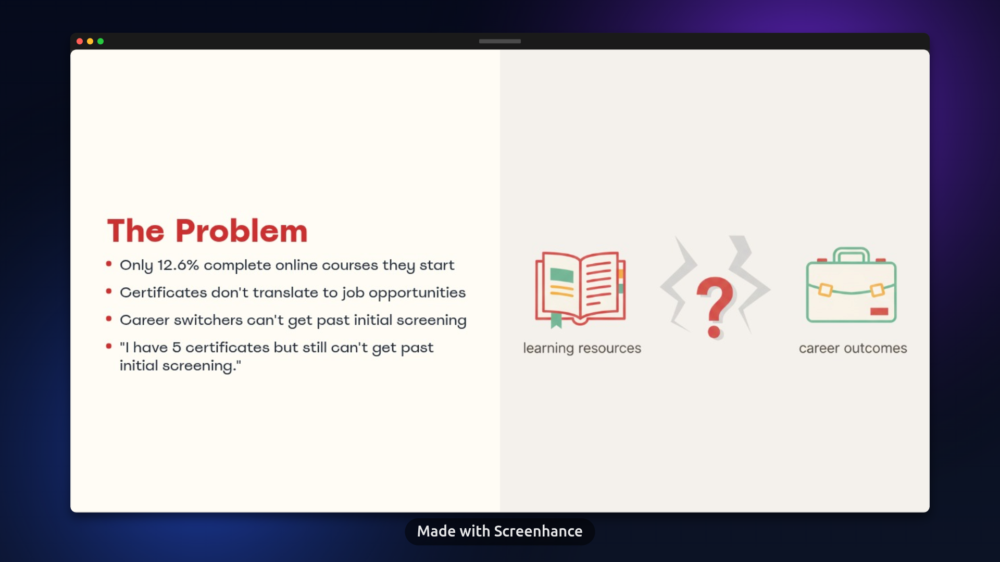

Praxis
Where career switchers prove their skills through what they build, not what they watched
Role: Product Manager
Context: EdTech · 2025
Context
I developed a product strategy for Praxis, a project-based learning platform for career switchers transitioning into tech. Through research, I identified various user segments, but focused primarily on career switchers aged 25-40 with a $200-500 budget and high urgency to land a tech job within 3-6 months.
Problem
Only 12.6% of people complete online courses they start. Worse, certificates don't translate to job opportunities—career switchers with multiple credentials still can't get past initial screening. The existing model prioritized passive learning over skill validation, leaving users with certificates but no proof of ability.

What I Did
⦁ Conducted research to identify core user segments: career switchers aged 25-40 with $200-500 budget, needing career-ready skills within 3-6 months through practical projects.
⦁ Designed a project-based portfolio builder, not a course platform. Users complete five hands-on projects with personalized expert feedback (guaranteed 48-hour turnaround).
⦁ Created a four-phase learning experience, from onboarding to building projects, to portfolio ready (validated work assembled), to job prep (webinars, applications, interviews over 8-10 weeks).
⦁ Planned a phased go-to-market: beta with 20 early adopters (months 1-2), organic growth to 55 users via Reddit/LinkedIn (months 3-4), partnerships to hit 100 users (months 5-6). Pricing at $199 per track.
Strategy
The Praxis strategy focused on what matters by building real projects with expert validation. The MVP would include five portfolio projects with personalized expert feedback, progress tracking dashboard, career-focused webinars and active Slack community support—starting with software engineering, with additional tracks planned.
Success would be measured through outcome-focused metrics that demonstrate real career impact rather than vanity numbers like course enrollments or video views.

Key Learning
Through research, I discovered the gap between what users consume (courses) and what employers value (proof of work). Focusing on career outcomes over activity metrics helped define a strategy that solves the real problem.